Konstanz
Search places, dates, cameras
Cards
NIKON Z 8 · SD card612
Eventsauto
Sa Pa14 Sep86
Konstanz12–13 Sep18 / 1,042
Brighton10 Sep420
Reichenau22–24 Aug212
On disk
Macintosh HD
Photos SSD
Catalog
All photographs842
Recently developed6
Konstanz31
Sa Pa · Sep 20266
Collections
Portfolio58
Missing originals212
Removed4
Sunday 13 September 2026424 photographs · 1 merge · 9 picked · 1 in the Development set
Nikon Z 8424
Bracket3 exposuresfrom metadataPick all 3Import mergedPick merged
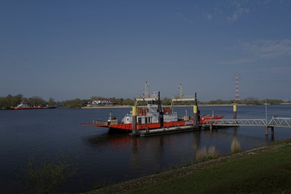
−2 EV
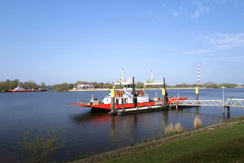
0 EV
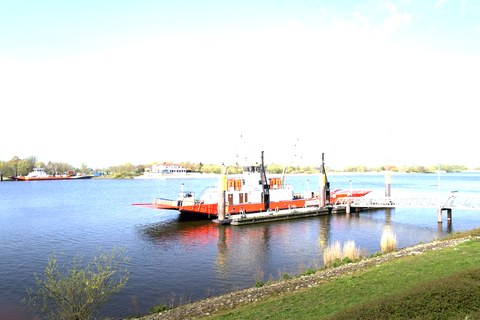
+2 EV
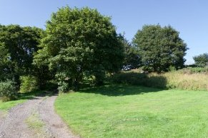
Panorama · 7 photos
DSC_4104 Panorama
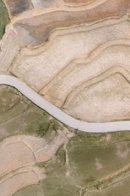
Frame 1 of 7
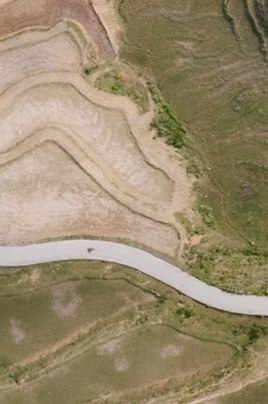
Frame 2 of 7
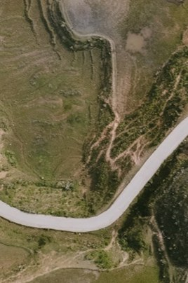
Frame 3 of 7
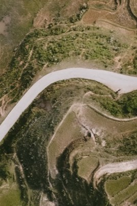
Frame 4 of 7
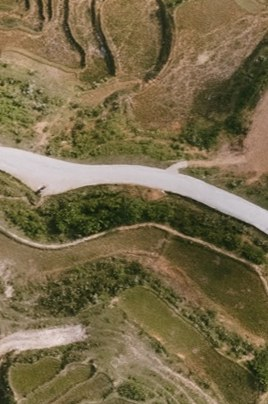
Frame 5 of 7
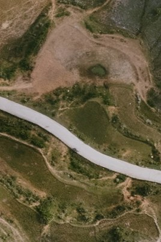
Frame 6 of 7
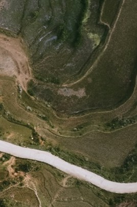
Frame 7 of 7
Capture time
DSC_4104 Panorama in Konstanz
Stack
Panorama · 7 photos
Cylindrical · 164° × 41° · 38,400 × 8,900
7 originals beneath it
Metadata
Captured13 Sep 2026 17:42:11
CameraNikon Z 8
LensNIKKOR Z 24–120 mm f/4 S · 35 mm
Dimensions38,400 × 8,900 · 342 MP
NameDSC_4104 Panorama
ReferenceFrame 4 · DSC_4104.NEF
FolderKonstanz
Merged panorama DSC_4104 Panorama · 7 photos · added to the Development set1 agent connected1,042 in view · 1 merge · 1 selected · 18 picked · 1 in the Development set